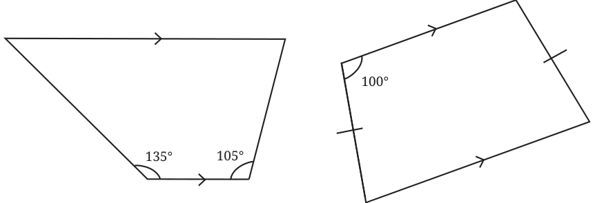
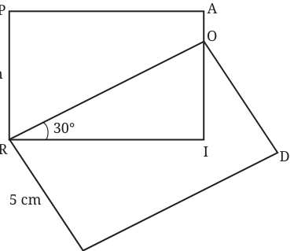
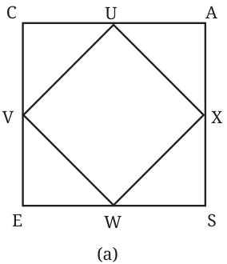
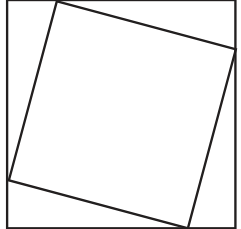
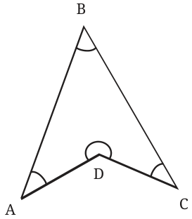

<!DOCTYPE html>
<html lang="en">
<head>
<meta charset="UTF-8">
<meta name="viewport" content="width=device-width,initial-scale=1">
<title>Figure it Out — Quadrilaterals</title>
<meta name="description" content="Class 8 Mathematics · Part 1 · Quadrilaterals · Figure it Out">
<link rel="icon" href="data:image/svg+xml,<svg xmlns='http://www.w3.org/2000/svg' viewBox='0 0 100 100'><text y='.9em' font-size='90'>📘</text></svg>">
<link rel="stylesheet" href="../../../assets/book.css">
<link rel="stylesheet" href="https://cdn.jsdelivr.net/npm/katex@0.16.11/dist/katex.min.css" crossorigin="anonymous">
</head>
<body>
<header class="topbar">
<div class="topbar-in">
  <div class="crumb">
    <span class="c1"><a href="../../../index.html">Library</a> · <a href="../../index.html">Class 8 Mathematics · Part 1</a></span>
    <span class="c2">Quadrilaterals · Figure it Out</span>
  </div>
  <a class="tb-btn" data-nav="prev" href="../../04-quadrilaterals/15-trapezium/index.html" title="Trapezium">←</a>
  <details class="drawer"><summary class="tb-btn" title="Sections in this chapter">☰</summary>
<div class="drawer-panel"><div class="dh">Quadrilaterals</div><a href="../01-chapter-opener/index.html">Chapter opener</a><a href="../02-rectangles-and-squares-4.1/index.html">4.1 Rectangles and Squares</a><a href="../03-a-carpenter-s-problem/index.html">A Carpenter’s Problem</a><a href="../04-the-process-of-finding-properties/index.html">The Process of Finding Properties</a><a href="../05-a-special-rectangle/index.html">A Special Rectangle</a><a href="../06-properties-of-a-square/index.html">Properties of a Square</a><a href="../07-figure-it-out/index.html">Figure it Out</a><a href="../08-angles-in-a-quadrilateral-4.2/index.html">4.2 Angles in a Quadrilateral</a><a href="../09-more-quadrilaterals-with-parallel-opposite-sides-4.3/index.html">4.3 More Quadrilaterals with Parallel Opposite Sides</a><a href="../10-quadrilaterals-with-equal-sidelengths-4.4/index.html">4.4 Quadrilaterals with Equal Sidelengths</a><a href="../11-figure-it-out/index.html">Figure it Out</a><a href="../12-playing-with-quadrilaterals-4.5/index.html">4.5 Playing with Quadrilaterals; Geoboard Activity</a><a href="../13-joining-triangles/index.html">Joining Triangles</a><a href="../14-kite-and-trapezium-4.6/index.html">4.6 Kite and Trapezium; Kite</a><a href="../15-trapezium/index.html">Trapezium</a><a href="../16-figure-it-out/index.html" aria-current="page">Figure it Out</a><a href="../17-summary/index.html">SUMMARY</a><a href="../18-figure-it-out/index.html">Figure it Out</a><a href="../19-figure-it-out/index.html">Figure it Out</a><a href="../20-figure-it-out/index.html">Figure it Out</a></div></details>
  <a class="tb-btn" data-nav="next" href="../../04-quadrilaterals/17-summary/index.html" title="SUMMARY">→</a>
  <button class="tb-btn" data-theme-toggle title="Toggle light / dark" aria-label="Toggle light or dark theme">◐</button>
</div>
<div class="progress"><span style="width:59.0%"></span></div>
</header>
<main class="wrap">
<div class="sec-head">
  <p class="eyebrow"><a href="../index.html">Chapter 4 · Quadrilaterals</a></p>
  <h1>Figure it Out</h1>
  <p class="sec-meta">Textbook pages 26–28 · 12 figures</p>
</div>
<article class="prose">
<ul class="qlist">
<li><span class="mk">1.</span><span class="lt">Find all the sides and the angles of the quadrilateral obtained by</span></li>
</ul>
<p>joining two equilateral triangles with sides 4 cm.</p>
<ul class="qlist">
<li><span class="mk">2.</span><span class="lt">Construct a kite whose diagonals are of lengths 6 cm and 8 cm.</span></li>
<li><span class="mk">3.</span><span class="lt">Find the remaining angles in the following trapeziums -</span></li>
</ul>
<figure class="fig wide"></figure>
<ul class="qlist">
<li><span class="mk">4.</span><span class="lt">Draw a Venn diagram showing the set of parallelograms, kites,</span></li>
</ul>
<p>rhombuses, rectangles, and squares. Then, answer the following questions -</p>
<ul class="qlist">
<li><span class="mk">(i)</span><span class="lt">What is the quadrilateral that is both a kite and a</span></li>
</ul>
<p>parallelogram?</p>
<ul class="qlist">
<li><span class="mk">(ii)</span><span class="lt">Can there be a quadrilateral that is both a kite and a rectangle?</span></li>
<li><span class="mk">(iii)</span><span class="lt">Is every kite a rhombus? If not, what is the correct relationship</span></li>
</ul>
<p>between these two types of quadrilaterals?</p>
<ul class="qlist">
<li><span class="mk">5.</span><span class="lt">If PAIR and RODS are two rectangles, find \(\angle IOD\).</span></li>
</ul>
<figure class="fig"></figure>
<figure class="fig wide"></figure>
<figure class="fig wide"></figure>
<ul class="qlist">
<li><span class="mk">6.</span><span class="lt">Construct a square with diagonal 6 cm without using a protractor.</span></li>
<li><span class="mk">7.</span><span class="lt">CASE is a square. The points U, V, W and X are the midpoints of the</span></li>
</ul>
<p>sides of the square. What type of quadrilateral is UVWX? Find this by using geometric reasoning, as well as by construction and measurement. Find other ways of constructing a square within a square such that the vertices of the inner square lie on the sides of the outer square, as shown in Figure (b).</p>
<figure class="fig"></figure>
<figure class="fig side-fig"></figure>
<ul class="qlist">
<li><span class="mk">8.</span><span class="lt">If a quadrilateral has four equal sides and one angle of \(90 ^{\circ}\) , will it be</span></li>
</ul>
<p>a square? Find the answer using geometric reasoning as well as by construction and measurement.</p>
<ul class="qlist">
<li><span class="mk">9.</span><span class="lt">What type of a quadrilateral is one in which the opposite sides are</span></li>
</ul>
<p>equal? Justify your answer. Hint: Draw a diagonal and check for congruent triangles.</p>
<figure class="fig side-fig"></figure>
<ul class="qlist">
<li><span class="mk">10.</span><span class="lt">Will the sum of the angles in a quadrilateral such as the following</span></li>
</ul>
<p>one also be \(360 ^{\circ}\) ? Find the answer using geometric reasoning as well as by constructing this figure and measuring.</p>
<figure class="fig"></figure>
<ul class="qlist">
<li><span class="mk">11.</span><span class="lt">State whether the following statements are true or false. Justify your</span></li>
</ul>
<p>answers.</p>
<ul class="qlist">
<li><span class="mk">(i)</span><span class="lt">A quadrilateral whose diagonals are equal and bisect each</span></li>
</ul>
<p>other must be a square.</p>
<figure class="fig wide"></figure>
<figure class="fig wide"></figure>
<ul class="qlist">
<li><span class="mk">(ii)</span><span class="lt">A quadrilateral having three right angles must be a rectangle.</span></li>
<li><span class="mk">(iii)</span><span class="lt">A quadrilateral whose diagonals bisect each other must be a</span></li>
</ul>
<p>parallelogram.</p>
<ul class="qlist">
<li><span class="mk">(iv)</span><span class="lt">A quadrilateral whose diagonals are perpendicular to each</span></li>
</ul>
<p>other must be a rhombus.</p>
<ul class="qlist">
<li><span class="mk">(v)</span><span class="lt">A quadrilateral in which the opposite angles are equal must</span></li>
</ul>
<p>be a parallelogram.</p>
<ul class="qlist">
<li><span class="mk">(vi)</span><span class="lt">A quadrilateral in which all the angles are equal is a rectangle.</span></li>
<li><span class="mk">(vii)</span><span class="lt">Isosceles trapeziums are parallelograms.</span></li>
</ul>
</article>
<nav class="pager"><a class="" data-nav="prev" href="../../04-quadrilaterals/15-trapezium/index.html"><span class="dir">← Previous</span><span class="t">Trapezium</span><span class="ch">Quadrilaterals</span></a><a class="nx" data-nav="next" href="../../04-quadrilaterals/17-summary/index.html"><span class="dir">Next →</span><span class="t">SUMMARY</span><span class="ch">Quadrilaterals</span></a></nav>
</main><footer class="site">Generated from the source textbook PDFs · text, figures and exercises belong to their respective publishers.</footer><script defer src="https://cdn.jsdelivr.net/npm/katex@0.16.11/dist/katex.min.js" crossorigin="anonymous"></script>
<script defer src="https://cdn.jsdelivr.net/npm/katex@0.16.11/dist/contrib/auto-render.min.js" crossorigin="anonymous"
  onload="renderMathInElement(document.body,{delimiters:[
    {left:'\\(',right:'\\)',display:false},
    {left:'$$',right:'$$',display:true},
    {left:'\\[',right:'\\]',display:true}],throwOnError:false,ignoredTags:['script','noscript','style','textarea','pre','code']})"></script>
<script src="../../../assets/book.js"></script>
<script defer src="../../../../assets/search.js"></script>
</body>
</html>
